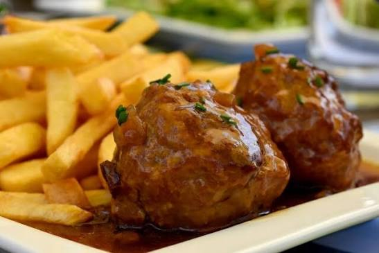

CityLoop Quest Liège


Le boulet à la liégeoise est le plat qui résume le mieux l’appétit local. On parle de boulet, pas de boulette : le mot sonne plus solide, plus généreux, plus liégeois. La sauce lapin, sucrée-salée, associe notamment sirop de Liège, oignons, vinaigre, parfois raisins ou bière selon les recettes.
La gaufre de Liège fonctionne sur un autre registre : pâte dense, morceaux de sucre perlé, caramélisation irrégulière et parfum de rue. Elle se mange chaude, sans cérémonie, souvent en marchant. Inutile d’en faire trop : une bonne gaufre n’a pas besoin d’un roman de chantilly.
Les bouquètes, crêpes de sarrasin souvent liées aux périodes de fête, les lacquemants, le pèkèt et les bières locales complètent le paysage. La gastronomie liégeoise n’est pas légère, mais elle a le mérite d’assumer franchement son côté convivial.
Le plus intéressant est de goûter ces spécialités dans leur contexte : une friterie de quartier, une brasserie près du Perron, une terrasse en Outremeuse, un marché du dimanche. À Liège, le goût vient rarement seul ; il arrive avec une voix, une table serrée et une discussion qui démarre sans demander la permission.